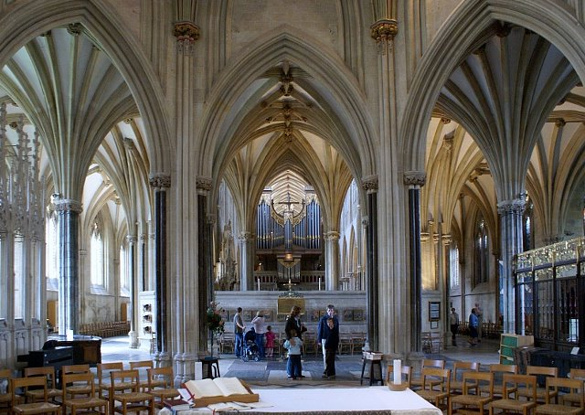

Wells - Najmniejsze spośród miast Wielkiej Brytanii!
Ta niewielka miejscowość w zachodniej Anglii (hrabstwo Somerset), położona jest około 30 km w kierunku południowym od Bristolu. Jednym z jego ciekawszych zabytków jest usytuowana we wschodniej części miasta monumentalna gotycka katedra pod wezwaniem św. Andrzeja Apostoła (Cathedral Church of St Andrew). Świątynia wzniesiona została w latach 1175-1490 w miejscu starego kościoła. Fasada katedry ozdobiona jest przeszło 300 figurami przez co uznawana jest za jedną z największych galerii średniowiecznych rzeźb na świecie. Dostrzeżemy tam m.in. motywy biblijne, królów, biskupów, zastępy aniołów czy dwunastu apostołów.
Wieże tylko w niewielkim stopniu są wyższe od elewacji nawy głównej. Kompozycja frontu z podziałem poziomym na dwie kondygnacje, poprowadzonym przez wprowadzenie gzymsów obejmuje wieże i elewację korpusu katedry. Linie poziome równoważą pionowe podziały sześcioma przyporami i powtarzalnymi detalami architektonicznymi w postaci nisz, arkad i wimperg. Środkową część fasady wieńczy szczyt ozdobiony dwoma rzędami rzeźb, z których wyższy przedstawia postacie apostołów.
Podobnie jak architektura romańska, gotyk w Anglii dzielony jest nieco inaczej, niż w innych krajach europejskich. Początki tego stylu są wspólne dla Anglii i północnej Francji, a dokładniej – Normandii. Początki gotyku przypadają na końcową fazę okresu zwanego dawnym angielskim lub staroangielskim (Early English), który trwa od ok. 1189 (można spotkać także datę 1170 i 1180) do ok. 1270. W tym czasie dokonania architektów są wspólne dla Anglii i Francji. Okres drugi nazywany dekoracyjnym (Decorated Style) przypada na lata od ok. 1270 do ok. 1350. Okres ostatni, tzw. wertykalny lub pionowy (Perpendicular Style), zamyka styl gotycki po roku 1500.

Zadziwiające jest wnętrze katedry w Wells. Przecinające się nożycowo łuki są zabytkiem gotyckim, stanowią podstawę wieży u skrzyżowania naw i jednocześnie są granicą oddzielającą proste, czterodzielne sklepienia krzyżowo-żebrowe nawy głównej od sklepień wachlarzowych w dalszej części katedry.
Bibliografia:
http://navtur.pl/place/show/3050,katedra-w-wells
https://pl.wikipedia.org/wiki/Architektura_gotycka_w_Anglii